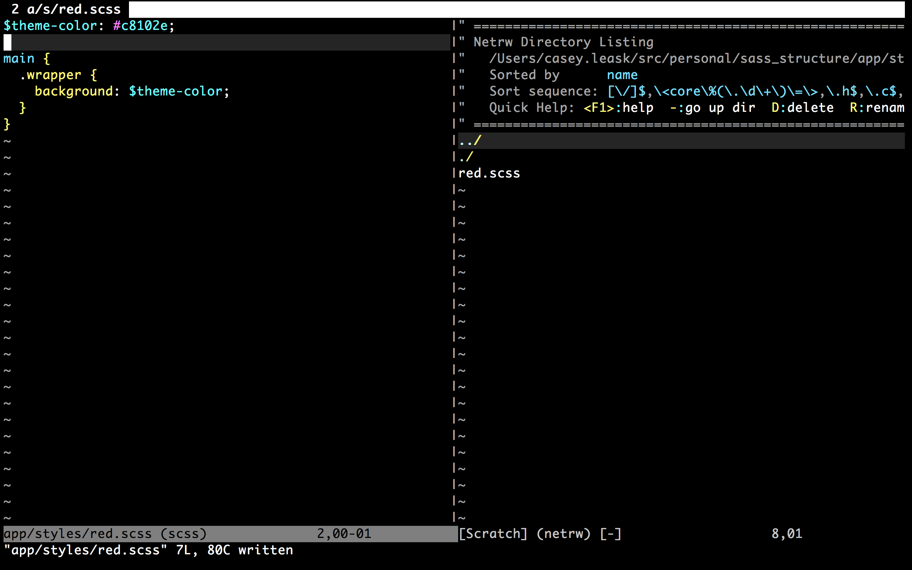
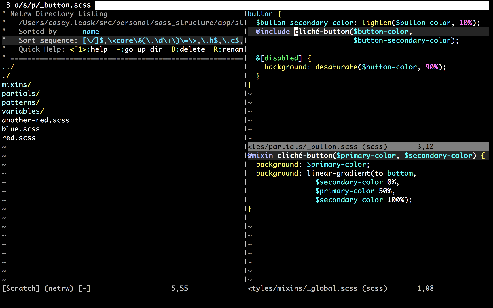
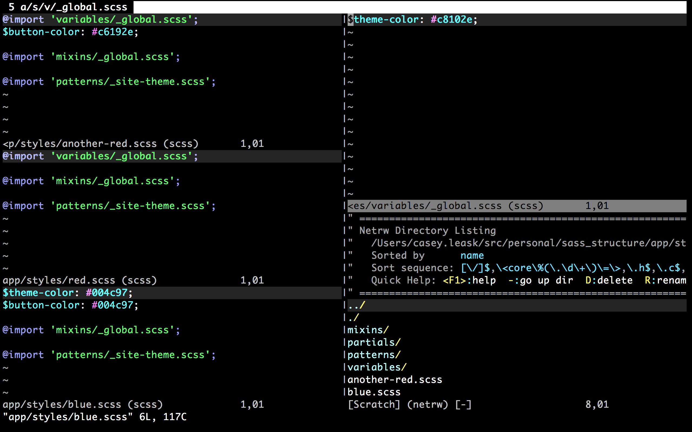

This talk is called Responsive Images by this guy @CaseyLeask Structuring Sass for reuse and composability  To recap: Sass File -> Patterns -> Partials Red -> Site Theme -> [Body Background, Buttons]   What happens now? Sass File -> [Variables, Mixins, Patterns -> *Partials] Thanks! @CaseyLeask